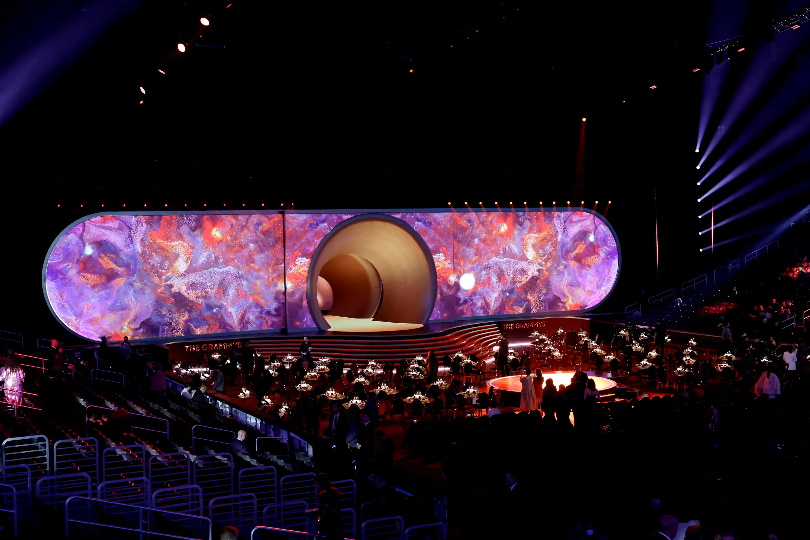
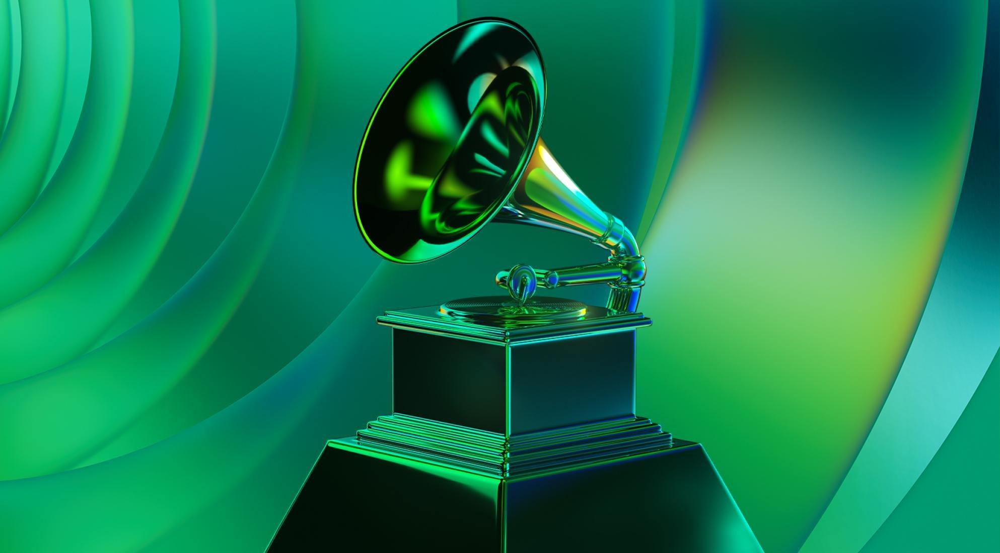

Emoción Musical en el Escenario
Sumérgete en las actuaciones inolvidables de los Grammy. Desde colaboraciones épicas hasta solos emocionantes, cada año ofrece un espectáculo musical único.
Estilo y Moda en la Alfombra Roja
Descubre los looks deslumbrantes de tus artistas favoritos en la alfombra roja. La fusión de moda y música crea momentos icónicos que perduran.
Innovación y Tecnología Musical
Los Grammy destacan la excelencia artística y los logros tecnológicos. Explora cómo la tecnología ha transformado la producción musical y elevado la experiencia auditiva.
Éxito Tras Bastidores
Conoce a los genios detrás de la magia. Descubre cómo productores, ingenieros de sonido y equipos creativos colaboran para dar vida a las grabaciones más destacadas del año.
Magia de los Premios Especiales
Explora categorías especiales que honran logros sobresalientes y contribuciones significativas a la industria musical. Cada galardón cuenta una historia única.